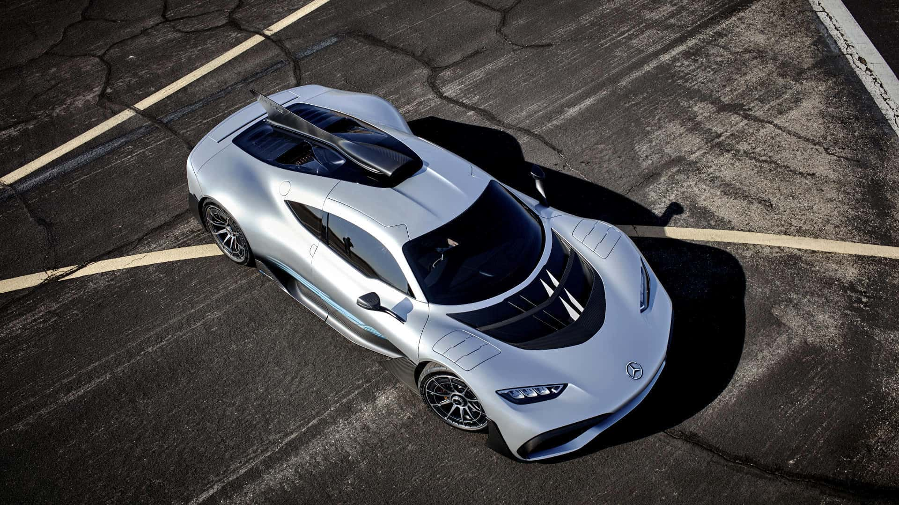
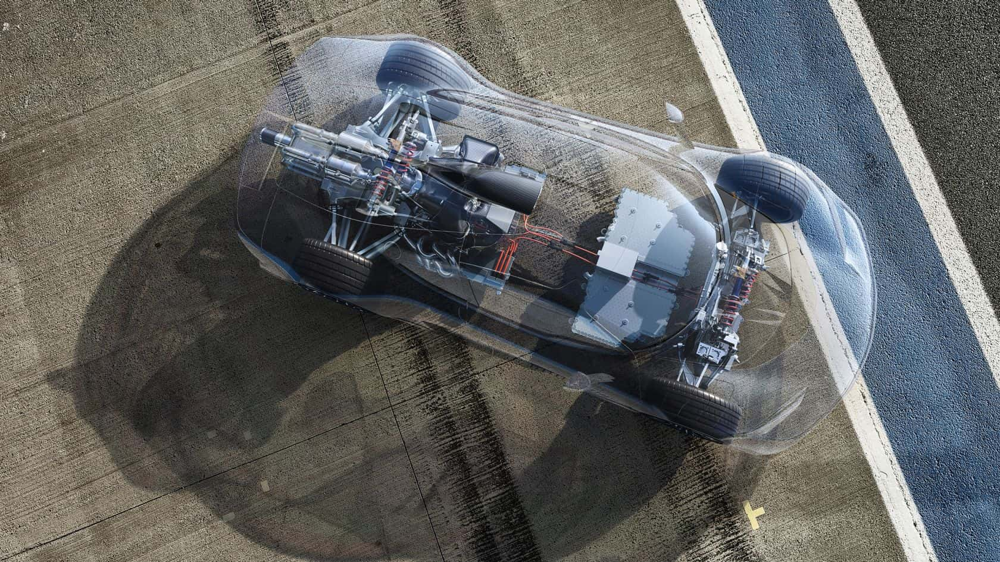

Mercedes-AMG ONE
La technologie de Formule 1 transposée à la route.Après une longue gestation, la très attendue Mercedes-AMG One pointe enfin le bout de ses spoilers. Sa fiche technique est insensée. Elle abrite un cœur sorti d'un autre monde, celui de la F1. Cette hypercar unique est animée par un ensemble hybride d'une puissance démoniaque de plus de 1 000 ch.
Un V6 hybride composé d’un bloc essence 1.6 turbo et de quatre blocs électriques. Capable d’atteindre les 11 000 tours/minute, le moteur développe pas moins de 1 063 ch ! Et d’après Mercedes-Benz, il est impossible de calculer le couple “en raison de la complexité de la chaîne cinématique”. Associée à une transmission intégrale variable 4Matic+ et une boîte de vitesses mécanique automatisée à sept rapports, la motorisation permet à cette hypercar d’accélérer de 0 à 100 km/h en 2,9 secondes, de 0 à 200 km/h en 7 secondes, de 0 à 300 km/h en 15,6 et d’atteindre une vitesse de pointe fixée à 352 km/h. Pour arrêter la cavalerie, des freins céramique composite hautes performances sont installés.
